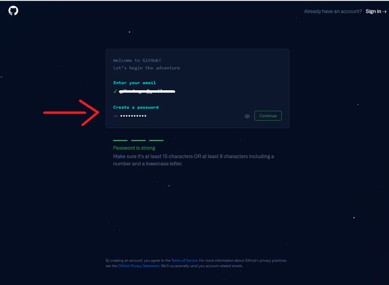
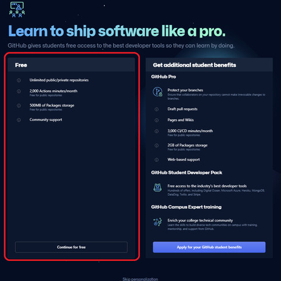
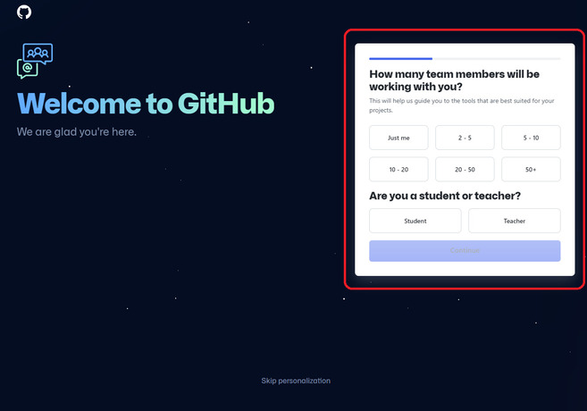

Git
1. O que é Controle de Versão?
É um sistema que registra as alterações de um arquivo ou conjunto deles ao longo do tempo, no qual permite visualizar as mudanças feitas nos arquivos e projetos, quem introduziu o conteúdo, localizar possíveis erros e recuperar as informações contidas nos arquivos.
2. O que é Git?
É um sistema de controle de versão, utilizado no mundo todo, para facilitar a interação de usuários dentro de um arquivo ou projeto, com grande desempenho, flexibilidade e segurança para diferentes tipos de projetos e fluxos de serviços.
2.1. O que é GitHub?
É uma plataforma de gerenciamento de código remoto, que utiliza o Git como sistema de versionamento de controle, usado para armazenar os projetos em repositórios, possibilitando a visualização detalhada, o compartilhamento com demais desenvolvedores e usuários de um mesmo projeto.
Se o Git é o coração do GitHub, então o Hub é a alma. O hub de GitHub é o que torna uma linha de comando, como o Git, a maior rede social para desenvolvedores do mundo. Além de contribuir em projetos específicos, o GitHub permite a socialização com pessoas que possuem os mesmos interesses que você. Você pode seguir pessoas e acompanhar o que fazem ou com quem se comunicam.
2.1.1. Passos para fazer login no GitHub
Primeiramente acesse https://github.com/
Usuário com Conta Existente:
- Clique em Sign in.
- Digite seu email ou usuário e senha.
- Página aberta.

Conta Nova:
- Clique em Sign up for GitHub.
- Digite seu email.
- Crie uma senha.

- Crie um nome de usuário.
- Caso deseje receber novidades e anuncios no email digite "y", caso contrario digite "n".
- Faça a verificação solicitada.

- Um codigo de verificação sera enviado a seu email. Digite o código no campo disponível.
- Selecione o tipo de conta gratuita, ou clique em "Skip personalization" se quiser pular a personalização de sua conta no GitHub.

- Caso continue com a personalização, selecione quantos membros estarão trabalhando com voce, caso sua conta seja feita para um trabalho coletivo. Selecione também se você é aluno ou professor para utilizar o GitHub.

- Selecione quais opções sao interessantes para seu GitHub personalidade.
- Cadastro realizado.
2.2. O que é GitLab?
É uma plataforma de gerenciamento de código remoto baseado no Git, tem a mesma funcionalidade do GitHub, porém o GitLab permite que os desenvolvedores armazenem o seu código em seus próprios provedores, ao invés de servidores de terceiros.
2.2.1. Passos para fazer login no GitLab
Acesse o link https://gitlab.com/users/sign_in
Login pelo GitHub:
- Clique em GitHub.
- Autorize a conexão.
- Autorize os termos.
- Login feito.
Nova conta:
- Clique em Register now para fazer uma nova conta.

- Preencha os campos necessários e clique em Register.

- Verifique seu email, clicando no link na plataforma do email que utiliza.

- Selecione os campos de acordo com suas informações e as informações desejadas.


- Realize o login com seu email/usuário e senha criados.

- Clique em "Ok, let's go".

- Login realizado.